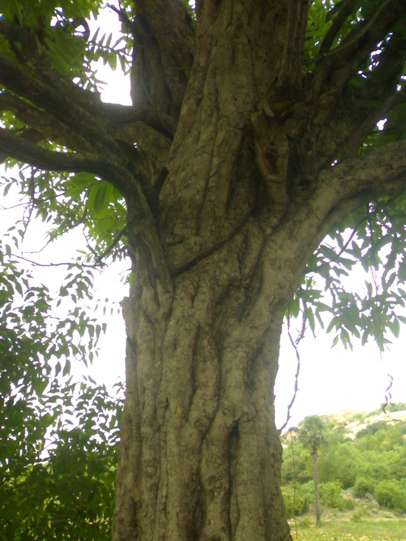

खिरनीKhirni
Manilkara hexandra · Sapotaceae · FLR-0318

- Scientific name वैज्ञानिक नाम
- Manilkara hexandra (Roxb.) Dubard
- Family कुल
- Sapotaceae
- Hindi हिंदी
- खिरनी
- Local names स्थानीय नाम
- khirni, khirni tree, rayan, khirni phal
- Status here यहाँ की स्थिति
- native
- Movement आवागमन
- Resident, here all year
- Known from कहाँ दर्ज
- Others have published records from the wider Awadh–Purvanchal plain, none yet from Basti–Ayodhya अवध–पूर्वांचल से दूसरों के प्रकाशित अभिलेख, बस्ती–अयोध्या से अभी नहीं
- IUCN IUCN
- not evaluated
- Review समीक्षा
- not yet reviewed
When to look कब देखें
Present all year. साल भर मौजूद।
Uses and possibilities उपयोग और संभावनाएँ
“Traditional medicine” means a documented traditional use, not a claim that it works. Nothing on this page is medical advice.
Drawn from the documented uses in the profile below, where each is labelled traditional, current or a research lead. All uses →
Tell it apart from इनसे अलग पहचानें
खिरनी / Khirni
Manilkara hexandra (Roxb.) Dubard — Sapotaceae
खिरनी — उत्तर भारत के प्राचीन बाग़-बगीचों और तराई का एक दीर्घायु, विशाल सदाबहार वृक्ष जिसकी पत्तियाँ मोटी, चमकीली और गहरे हरे रंग की होती हैं। ज्येष्ठ की तपती गर्मी में इसके छोटे अंडाकार फल पककर सुनहरे पीले हो जाते हैं, जो खाने में अत्यंत मीठे और गूदेदार होते हैं। इसकी लकड़ी लोहे जैसी मजबूत और भारी होती है, और यह चीकू के पौधों की कलम लगाने में मुख्य आधार वृक्ष का काम करता है।
Quick Identification त्वरित पहचान
| Feature | Description |
|---|---|
| Habit | Large evergreen tree 12–20 m tall with a dense, spreading rounded canopy (Duthie 1911) |
| Bark | Dark grey to blackish, deeply and longitudinally cracked, rough and rough-plated |
| Leaves | Obovate or oblong-elliptic, 5–12 cm long, rigidly coriaceous, emarginate at the apex (Duthie 1911) |
| Exudate | Milky white latex exudes abundantly from cut bark, petioles, and unripe fruits |
| Flowers | Small, pale yellow or whitish, 6–8 mm across, solitary or clustered in leaf axils (Duthie 1911) |
| Fruit | Oblong-ellipsoid berry 1.2–2.0 cm long, ripening bright golden-yellow with sweet milky pulp (Duthie 1911) |
Field tip: Look in ancient orchards and temple compounds for a massive, dark-trunked evergreen tree with stiff leathery leaves notched at the tip, bearing sweet yellow oval berries in May.
हिंदी — कैसे पहचानें: गहरा काला खुरदरा तना, मोटी चमड़े जैसी पत्तियाँ जिनके सिरे हल्के कटे होते हैं, दूधिया रस, और जेठ के महीने में पकने वाले छोटे पीले मीठे फल।
Morphology शारीरिक संरचना
Biometrics (Duthie 1911; Brandis 1906):
| Measurement | Range |
|---|---|
| Tree height | 12–20 m (Duthie 1911) |
| Trunk girth | 1.5–3.5 m (Brandis 1906) |
| Leaf length | 5–12 cm (Duthie 1911) |
| Leaf width | 3–6 cm (Duthie 1911) |
| Petiole length | 8–18 mm (Duthie 1911) |
| Berry length | 1.2–2.0 cm (Duthie 1911) |
Trunk and bark: Bole straight, massive in mature specimens, supporting a heavy spreading head. Bark thick, dark grey to black, deeply furrowed longitudinally into firm rectangular scales. Wood dark red or deep purple-brown, remarkably heavy, dense, and tough.
Leaves: Alternate, simple, crowded near twig branchings, rigidly coriaceous, glabrous and glossy dark green above, paler beneath. Leaf base cuneate; apex rounded and often distinctly emarginate.
Flowers and fruit: Flowers bisexual, 6-merous, borne in axillary fascicles. Calyx segments six, biseriate; corolla pale yellow, lobes eighteen in two series. The fruit is a smooth 1–2 seeded oblong-ellipsoid berry, yellow when ripe, enclosing shiny brown seeds.
हिंदी: पेड़ का तना बहुत विशाल और छाल गहरी फटी हुई होती है। पत्तियाँ सख्त और ऊपर से चमकदार होती हैं। फल अंडाकार, पीला और गूदेदार होता है जिसमें एक या दो चमकदार बीज निकलते हैं।
Behaviour & Ecology व्यवहार एवं पारिस्थितिकी
Manilkara hexandra is a slow-growing, extremely durable climax forest tree capable of surviving several centuries. It thrives in well-drained deep alluvial loams as well as rocky dry soils, exhibiting outstanding resistance to severe summer heat and seasonal drought.
Its dense, dark evergreen canopy remains lush throughout the hottest pre-monsoon months, creating a sheltered microclimate that provides essential refuge for birds, bats, and insects. The sweet, lipid- and sugar-rich berries ripen in May and June, serving as a vital sustenance bridge for wildlife before the monsoon fruiting commences.
हिंदी: यह अत्यंत धीमी गति से बढ़ने वाला और सैकड़ों वर्षों तक जीवित रहने वाला वृक्ष है। जेठ की चिलचिलाती धूप में भी इसकी घनी पत्तियाँ हरी-भरी रहती हैं और पक्षियों को ठंडी छांव देती हैं।
Life Cycle / Phenology जीवन चक्र एवं ऋतुचक्र
| Period | Phenological Event |
|---|---|
| October–December | Fragrant pale yellow blossoms emerge in dense clusters along axillary twigs |
| January–March | Small green berries develop slowly through the cold weather months |
| April–June | Berries swell and ripen golden-yellow; peak fruit drop and wildlife feeding occur |
| July–September | Vegetative growth flushes during the monsoon with fresh dark glossy foliage |
Seeds possess a hard testa and are dispersed widely by fruit bats and birds, germinating during the warm moist conditions of the rainy season.
हिंदी: जाड़ों की शुरुआत में फूल खिलते हैं और फल धीरे-धीरे बढ़ते हैं। मई-जून में फल पककर पीले हो जाते हैं और बरसात में नए पत्ते निकलते हैं।
Associated Species / Interactions संबद्ध प्रजातियाँ एवं पारस्परिक क्रियाएं
- Frugivores: Indian Flying Fox, Common Myna, and green pigeons consume vast quantities of the ripe yellow berries.
- Pollinators: Small bees and wasps visit the small nectariferous autumn flowers.
- Orchard Companions: Historically planted alongside Mango, Jamun, and Mahua in ancestral groves.
हिंदी: इसके मीठे पके फलों पर रात में चमगादड़ और दिन में मैना व तोते दावत उड़ाते हैं।
Pests and Diseases कीट एवं रोग
- Sapota stem borer (Plocaederus ferrugineus) occasionally attacks old or physically injured trunks.
- Leaf webbers feed on tender terminal shoots during the post-monsoon flush.
- Sooty mold develops on honeydew secreted by scale insects in shaded lower boughs.
हिंदी: पुराने तनों में कभी-कभी छेदक कीट लग जाते हैं और पत्तियों पर चिपचिपा काला फफूंद आ जाता है।
Agricultural / Human Relevance कृषि एवं मानवीय उपयोगिता
Traditional and Horticultural Uses:
- Edible fruit. Khirni berries are widely gathered and sold in local summer bazaars, eaten fresh or dried like raisins ("rayan").
- Horticultural rootstock. It is the premier commercial rootstock across India for grafting sapota (chikoo, Manilkara zapota), providing immense root vigor and drought resilience.
- Timber. The heavy, iron-like wood is prized for oil crushers, sugar presses, rice pounders, and heavy cart axles.
- Traditional medicine. Bark decoctions are documented in Ayurvedic compendia for astringent mouthwashes and gum strengthening (Kirtikar & Basu 1935). This is a record of traditional use, not medical advice.
Today. Ancient khirni trees are revered heritage specimens in Awadh villages, though young saplings are rarely planted due to their slow initial growth.
हिंदी: खिरनी का फल गर्मियों में बाज़ार में बिकता है और सुखाकर भी रखा जाता है। बागवानी में चीकू की कलम लगाने के लिए खिरनी की जड़ और तना सबसे उपयुक्त माने जाते हैं।
Expected Locally स्थानीय संभावना एवं उपस्थिति
Not a field record. Written from published accounts for eastern Uttar Pradesh. No confirmed local sighting yet — if you have seen it, that is what the atlas needs.
अभी तक स्थानीय पुष्टि नहीं। यह विवरण प्रकाशित स्रोतों से है, किसी अवलोकन से नहीं।
Expected in eastern Uttar Pradesh as majestic old trees in ancestral orchards, temple groves, riverine terraces along the Ghaghara basin, and older village settlements across Basti and Ayodhya. GBIF holds published records from the wider Awadh–Purvanchal plain, none yet from Basti–Ayodhya. A first local record would be a dated photograph of the foliage, flowers, or fruit, submitted with locality details through the project's About page.
Distribution भौगोलिक वितरण
Global range: Native to South Asia (India, Sri Lanka, Bangladesh) and Southeast Asia (Myanmar, Thailand, Cambodia, Vietnam).
In India: Wild in dry deciduous and evergreen forests of the Deccan, Gujarat, Rajasthan, and central India; planted throughout the Indo-Gangetic plain (Brandis 1906).
In Uttar Pradesh: Recorded from historical groves, village orchards, and forest fringes across northern and central districts (Duthie 1911).
In Basti district / eastern UP: Expected as relic ancient trees in traditional village gardens and institutional lands.
हिंदी: भारत के शुष्क वनों और गंगा के मैदानी इलाकों के पुराने बगीचों में यह पेड़ पाया जाता है।
Research Questions शोध प्रश्न
- How many heritage khirni trees survive in old village groves of Basti and Ayodhya? / बस्ती और अयोध्या के पुराने बाग़ों में कितने प्राचीन खिरनी के पेड़ आज भी बचे हैं?
- Which bat species are the primary nocturnal seed dispersers of ripening khirni berries in May? / मई में पके खिरनी के फलों को रात में कौन-से चमगादड़ खाकर बीज बिखेरते हैं?
- What is the local grafting nursery demand for wild khirni rootstock seeds in the region? — Interview fruit plant nursery operators in peri-urban belts.
- How do seedling growth rates compare under open orchard versus shaded forest conditions? — Track early growth metrics across experimental plantings.
- Are dried khirni berries still processed or stored by rural households in Awadh? / क्या अवध के ग्रामीण परिवारों में आज भी खिरनी को सुखाकर रखने की परंपरा जीवित है?
Similar Species समान प्रजातियाँ
| Species | How to tell apart | हिंदी |
|---|---|---|
| Mahua (Madhuca longifolia) | Leaves softer, not notched at tip; flowers large, fleshy, cream-coloured | पत्तियाँ नरम, फूल बड़े और गूदेदार |
| Jamun (Syzygium cumini) | Leaves opposite, fragrant when crushed; fruit larger, purplish-black | पत्तियाँ आमने-सामने, फल जामुनी-काला |
| Neem (Azadirachta indica) | Leaves pinnately compound with serrated asymmetric leaflets | पत्तियाँ संयुक्त और दांतेदार |
Field rule: Stiff leathery obovate leaves with notched (emarginate) tips, white latex, deeply fissured dark grey bark, and small sweet golden-yellow berries ripening in summer distinguish Manilkara hexandra.
Taxonomy & Classification वर्गिकी एवं वर्गीकरण
Original description. First described as Mimusops hexandra by William Roxburgh in 1795 in Plants of the Coast of Coromandel, vol. 1, p. 16. Transferred to the genus Manilkara by Marcel Marie Dubard in 1915 in Annales de l'Institut Botanico-Géologique Colonial de Marseille, sér. 3, 3: 9.
Subspecies. Monotypic — no subspecies are currently recognised within Manilkara hexandra.
Family and order placement. Belongs to the family Sapotaceae within the order Ericales. The family is characterised by latex-bearing tissues, alternate simple coriaceous leaves, and fleshy berries.
Phylogenetic notes. Manilkara is a pantropical genus of approximately eighty species, closely related to Mimusops and Pouteria.
IUCN status rationale. Not evaluated in the master expansion list; wild populations in parts of peninsular India face pressures from habitat fragmentation, but it remains secure in cultivation.
हिंदी: विलियम रॉक्सबर्ग ने 1795 में इसका वर्णन मिमुसोप्स वंश में किया था, जिसे 1915 में वैज्ञानिक डुबार्ड ने मणिकारा वंश में स्थानांतरित किया।
Photo Gallery छायाचित्र दीर्घा
No photos yet — add field photos to media/species/khirni/ and run node scripts/sync_photos.js.
Photos needed आवश्यक फोटो
- [ ] Massive mature tree with dense dark green crown (विशाल घना सदाबहार वृक्ष)
- [ ] Stiff leathery leaves showing notched emarginate tips (कटे हुए सिरे वाली पत्तियाँ)
- [ ] Bunches of ripe golden-yellow berries in summer (गर्मियों में पके सुनहरे पीले फल)
References संदर्भ सूची
- Dubard, M. (1915). Les Sapotacées du groupe des Sideroxylinées. Annales de l'Institut Botanico-Géologique Colonial de Marseille, sér. 3, 3, pp. 9–10.
- Roxburgh, W. (1795). Plants of the Coast of Coromandel, vol. 1, p. 16, t. 15. W. Bulmer & Co., London.
- Duthie, J.F. (1911). Flora of the Upper Gangetic Plain and of the Adjacent Siwalik and Sub-Himalayan Tracts, vol. 2, pp. 13–14. Government Printing, Calcutta.
- Brandis, D. (1906). Indian Trees, p. 425. Archibald Constable & Co., London.
- Kirtikar, K.R. & Basu, B.D. (1935). Indian Medicinal Plants, 2nd ed., vol. 2, pp. 1492–1494. Lalit Mohan Basu, Allahabad.
- GBIF Occurrence Data — Manilkara hexandra (Roxb.) Dubard, India (2025).
Source file: species/flora/trees/khirni.md